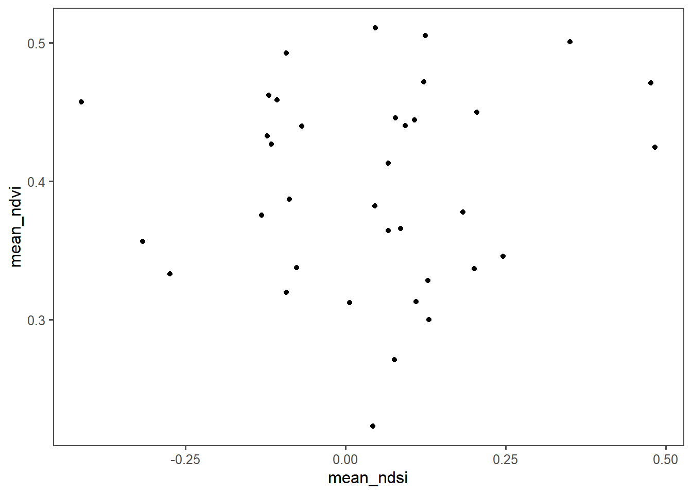
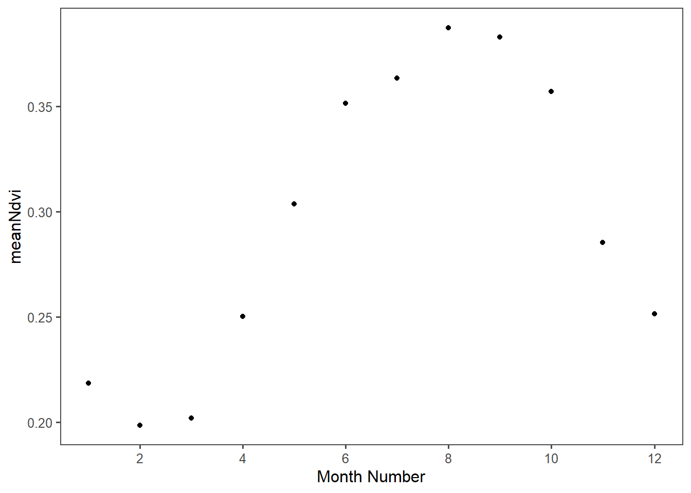
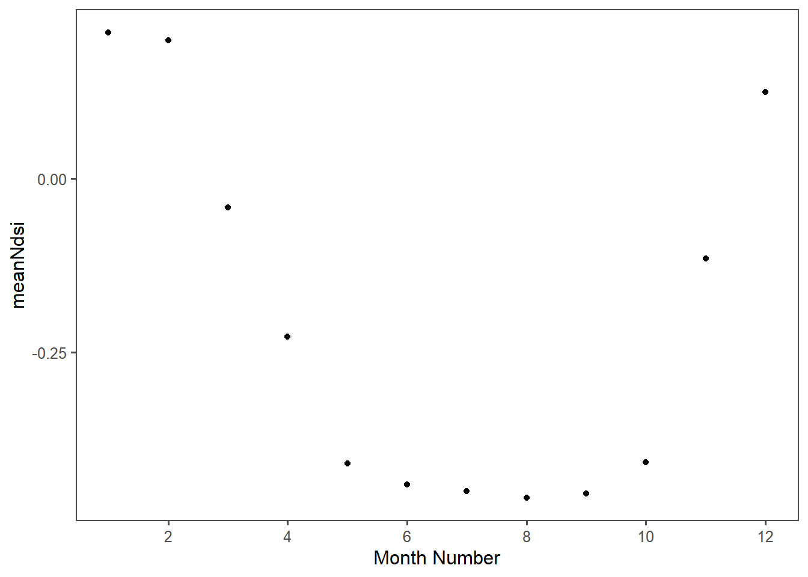

Chapter 2 Data Wrangle
Pulling data from files and reading them into R for analysis.
library(tidyverse)
library(tidyr)
library(ggthemes)
library(lubridate)
# Now that we have learned how to munge (manipulate) data
# and plot it, we will work on using these skills in new ways
#knitr::opts_knit$set(root.dir='..')####-----Reading in Data and Stacking it ----- ####
#Reading in files
files <- list.files('data',full.names=T)
##'data' will work if not inline printing
#Read in individual data files
ndmi <- read_csv(files[1]) %>%
rename(burned=2,unburned=3) %>%
mutate(data='ndmi')
ndsi <- read_csv(files[2]) %>%
rename(burned=2,unburned=3) %>%
mutate(data='ndsi')
ndvi <- read_csv(files[3])%>%
rename(burned=2,unburned=3) %>%
mutate(data='ndvi')
# Stack as a tidy dataset
full_long <- rbind(ndvi,ndmi,ndsi) %>%
gather(key='site',value='value',-DateTime,-data) %>%
filter(!is.na(value))
##new word is called pivot_longer2.1 Question (1)
What is the correlation between NDVI and NDMI? - here I want you to convert the full_long dataset in to a wide dataset using the function “spread” and then make a plot that shows the correlation s a function of if the site was burned or not (x axis should be ndmi) You should exclude winter months and focus on summer months
full_wide<-spread(full_long, key='data', value='value')%>%
mutate(month=month(DateTime))%>%
filter( month %in% c(5,6,7,8,9))
ggplot(full_wide, aes(x=ndmi, y=ndvi,color=site ))+
geom_point(shape=1) +
theme_few() +
scale_color_few() +
theme(legend.position=c(0.8,0.8))## Warning: Removed 19 rows containing missing values (geom_point).
print("There is a positive correlation between NDMI and NDVI for the summer months. This indicates that seasonal moisture impacts vegetation growth. ")## [1] "There is a positive correlation between NDMI and NDVI for the summer months. This indicates that seasonal moisture impacts vegetation growth. "2.2 Question (2)
- What is the correlation between average NDSI (normalized snow index) for January - April and average NDVI for June-August? In other words, does the previous year’s snow cover influence vegetation growth for the following summer?
f_ndsi<-filter(full_long, data=='ndsi')%>%
mutate(year=year(DateTime),month=month(DateTime))%>%
filter(month%in% c(1,2,3,4))%>%
group_by(year)%>%
summarise(mean_ndsi=mean(value))
f_ndvi<-filter(full_long, data=='ndvi')%>%
mutate(year=year(DateTime),month=month(DateTime))%>%
filter(month%in% c(7,8,9))%>%
group_by(year)%>%
summarise(mean_ndvi=mean(value))
all_year<-inner_join(f_ndsi, f_ndvi, by='year')
ggplot(all_year, aes(x=mean_ndsi, y=mean_ndvi))+
geom_point() +
theme_few() +
scale_color_few() +
theme(legend.position=c(0.8,0.8))
print("There is a weak positive correlation between NSDI and NDVI. This indicates that the previous years' snow cover influences the vegetation growth.")## [1] "There is a weak positive correlation between NSDI and NDVI. This indicates that the previous years' snow cover influences the vegetation growth."2.3 Question (3)
How is the snow effect from question 2 different between pre- and post-burn and burned and unburned?
ndsi3<-filter(full_long, data=='ndsi')%>%
mutate(year=year(DateTime),month=month(DateTime))%>%
filter(month%in% c(1,2,3,4))%>%
group_by(year,site)%>%
summarise(mean_ndsi=mean(value))## `summarise()` has grouped output by 'year'. You can override using the
## `.groups` argument.ndvi3<-filter(full_long, data=='ndvi')%>%
mutate(year=year(DateTime),month=month(DateTime))%>%
filter(month%in% c(7,8,9))%>%
group_by(year,site)%>%
summarise(mean_ndvi=mean(value))## `summarise()` has grouped output by 'year'. You can override using the
## `.groups` argument.## Joining, by = c("year", "site")ggplot(all_year3, aes(x=mean_ndsi, y=mean_ndvi, color=site))+
geom_point() +
theme_few() +
scale_color_few()
message("The burned sites (blue) are more impacted by the previous years snow than the unburned (orange) sites")## The burned sites (blue) are more impacted by the previous years snow than the unburned (orange) sites2.4 Question (4)
What month is the greenest month on average?
#plot it?
monthlygreen<-spread(full_long, key='data', value='value')%>%
mutate(month=month(DateTime))%>%
group_by( month)%>%
summarise(meanNdvi=mean(ndvi, na.rm=TRUE))
ggplot(monthlygreen, aes(x=month, y=meanNdvi))+
geom_point() +
theme_few() +
scale_color_few()+
scale_x_continuous(name="Month Number", limits=c(1, 12), breaks=c(2,4,6,8,10,12))
## [1] 8## On average the greenest month is the 8th month.2.5 Question (5)
What month is the snowiest on average?
snowy<-spread(full_long, key='data', value='value')%>%
mutate(month=month(DateTime))%>%
group_by( month)%>%
summarise(meanNdsi=mean(ndsi, na.rm=TRUE))
ggplot(snowy, aes(x=month, y=meanNdsi))+
geom_point() +
theme_few() +
scale_color_few()+
scale_x_continuous(name="Month Number", limits=c(1, 12), breaks=c(2,4,6,8,10,12))
## [1] 1## On average the snowiest month is the 1st month.